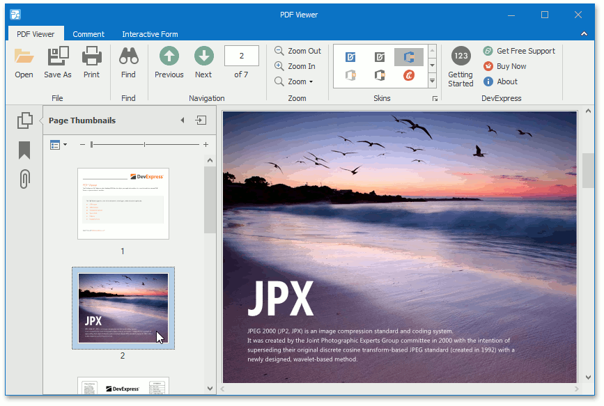

Thumbnails
This document introduces page thumbnails and describes their capabilities on a Navigation pane.
This document consists of the following sections.
Overview
A thumbnail provides a miniature preview of a document page. The PDF Viewer shows page thumbnails of an active PDF document in the Page Thumbnails panel. The panel is located on the Navigation pane.

When a thumbnail is selected, the PDF Viewer shows the corresponding page.

You can navigate through a document by selecting the page thumbnails.
The Page Thumbnails panel provides thumbnail options that can be accessed using one of the following ways:
click the Options drop-down button;

use the right click menu of the Page Thumbnails panel.

Customization
The Page Thumbnails panel provides the following options.
Print Pages... - invokes the Print dialog in which you can print pages that correspond to the selected thumbnails.
Use this option after a thumbnail is selected. If there are no selected thumbnails in the panel, the Page range option in the Print dialog is set to All. This means that all pages in a document can be printed.
- Enlarge Page Thumbnails - increases the page thumbnails size.
- Reduce Page Thumbnails - decreases the page thumbnails size.
You can also enlarge/reduce thumbnail size using one of the following ways:
- press Ctrl on the keyboard and scroll the mouse wheel when the Page Thumbnails panel is focused;
use the zoom slider which is placed on the Page Thumbnails panel.